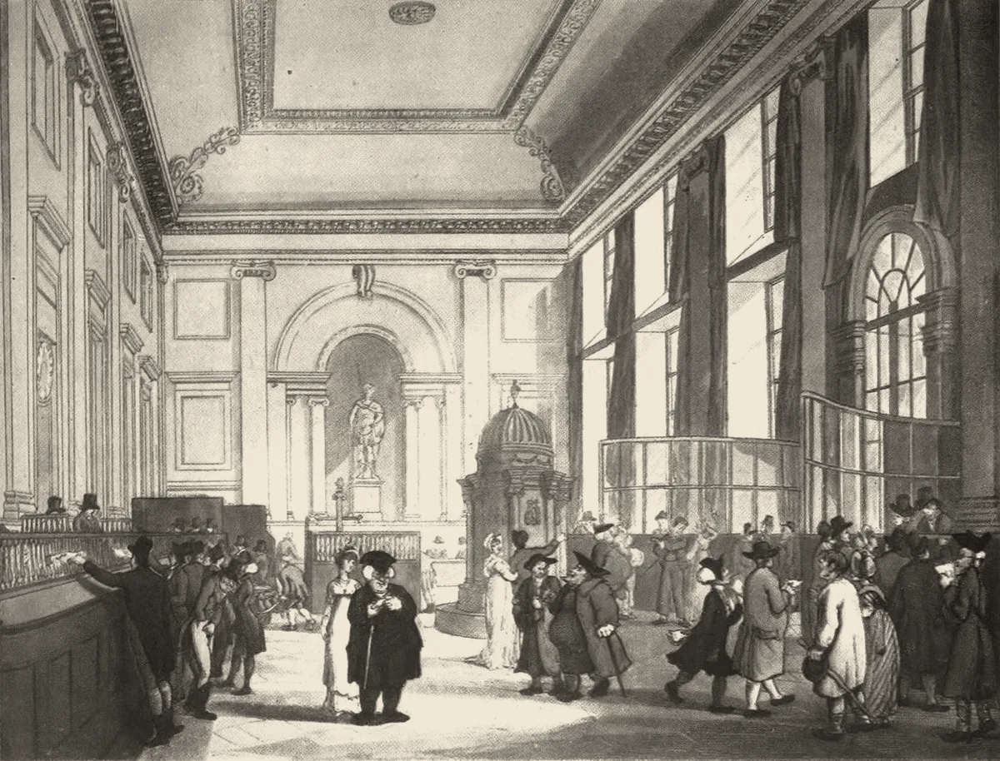

· Edición 46 · 4 min de lectura
Bre-B sumó 36 millones de usuarios en su primer año

Bre-B sumó 36 millones de usuarios en su primer año
Ver todo el tema, de principio a fin →
En pocas palabras. En su primer año, Bre-B, el sistema del Banco de la República para mandar dinero gratis y al instante entre bancos y billeteras, sumó 36 millones de usuarios. A usted le ahorra comisiones, pero las estafas viajan igual de rápido: en Brasil, con su sistema gemelo, volvieron menos de 9 de cada 100 reales robados. El Reino Unido obliga a los bancos a reembolsar a las víctimas engañadas; aquí no encontramos una regla así.
El dato curioso. El primer cajero automático se estrenó el 27 de junio de 1967 en una sucursal de Barclays en Enfield, al norte de Londres. Su inventor, John Shepherd-Barron, quería claves de seis dígitos, como su número del Ejército. Su esposa, Caroline, le dijo en la mesa de la cocina que ella solo recordaba cuatro. «Por ella, cuatro cifras se volvieron el estándar mundial», le contó él a la BBC en 2007.
Qué mejoró. El 6 de octubre, el gerente del Banco de la República, Leonardo Villar, presentó el balance del primer año. Bre-B pasó de unos 60 millones de transacciones al mes a unos 240 millones.
Son, sobre todo, pagos pequeños: 62 de cada 100 fueron de menos de 50.000 pesos. Antes, en la mayoría de los bancos, pasar dinero a otro banco costaba entre unos 4.600 y 14.500 pesos. (Fuente única; no verificado.)
Noviembre de 2020
Brasil lanza Pix
En un año, 67 de cada 100 adultos lo usaban.
2023
La regla
El Plan Nacional de Desarrollo faculta al Banco de la República para regular cómo se conectan entre sí los sistemas de pago.
6 de octubre de 2025
Arranca Bre-B
Unos 60 millones de transacciones en el primer mes.
1 de octubre de 2026
Récord
10,4 millones de transacciones en un día.
17 de octubre de 2026
Reglas nuevas, en consulta
Cierra la consulta del proyecto PR-DSP-008, que cambia las reglas del sistema y de los códigos QR.
Sin fechaPendiente
La versión final
El Banco no ha dicho cuándo la expide.
Fuente: BIS; Banco de la República; Portafolio; Diario del Sur
¿Por qué mejoró?
- Una regla, no una aplicación. El Plan Nacional de Desarrollo de 2023 facultó al Banco para fijar las reglas con las que bancos y billeteras se conectan entre sí. Antes, unas 25 entidades ofrecían pagos inmediatos; hoy hay 245 conectadas.
- Gratis para las personas. Enviar dinero a otra persona no cuesta.
- Una llave en vez de un número de cuenta. Basta la cédula, el celular o el correo de quien recibe.
Ya pasó antes. En 2007, Kenia estrenó M-Pesa, para mandar dinero por mensaje de texto. Un estudio publicado en Science en 2016, que siguió a miles de hogares durante seis años, estimó que sacó de la pobreza extrema a 194.000 hogares, 2 de cada 100 del país. Ganaron más los hogares encabezados por mujeres.
El patrón. Cuando mover dinero deja de costar, llega a quienes antes no alcanzaba. Y también a los estafadores.
¿Qué lo amenaza?
- Las estafas. Llegan mensajes que suplantan a los bancos y piden aceptar un pago con un enlace; el Banco de la República advierte que eso nunca es necesario. Y una transferencia inmediata no se reversa sola: recuperar el dinero depende de un reclamo.
- Brasil ya lo vivió. Allá, el banco devuelve solo si queda saldo en la cuenta del estafador.
- El Reino Unido cambió la regla. Desde octubre de 2024, el banco que envía y el que recibe le pagan a la víctima engañada, por partes iguales, hasta 85.000 libras.
9 de cada 100
Brasil, enero de 2022 a abril de 2026: el banco devuelve solo si encuentra saldo en la cuenta del estafador.
88 de cada 100
Reino Unido, primer año de la regla: los bancos devuelven aunque el dinero ya se haya ido. Las bases no son idénticas.
Fuente: O Povo, con datos del Banco Central de Brasil; Payment Systems Regulator
En ese primer año británico, las pérdidas bajaron cerca de 21%, según una evaluación independiente: cuando el banco paga, al parecer vigila más.
Pero ojo.
- El efectivo sigue mandando. Se usa en 66 de cada 100 pagos, según el Banco de la República. En 2012 eran 91: la caída empezó antes de Bre-B.
- Falta medir el efecto. En Brasil, una nota técnica del BID de 2026 asocia Pix con más ahorro y crédito, sin probar que sea la causa. Aquí no hay todavía una evaluación.
Qué hacer con esto
Cómo prepararse. Registrar una llave es gratis. Nunca acepte un pago a través de un enlace. Si lo estafan, avise a su banco de inmediato.
Ojo con el cuento. «116 millones de llaves» no son 116 millones de personas: solo 45 millones han recibido al menos un pago. Para medir un sistema, pregunte cuántos lo usan, no cuántos se inscribieron.
Qué podríamos exigir. Una regla de devolución como la británica, con el costo repartido entre el banco que envía y el que recibe.
Dos lecturas
Las dos posturas sobre el tema, en su mejor versión
Que el banco devuelva lo robado. Los bancos diseñan los controles y pueden frenar un pago sospechoso; la víctima no. Si pagan la estafa, invierten en impedirla, como sugiere el primer año británico.
Que cada quien cuide sus llaves. Si el banco siempre devuelve, el costo lo pagan todos los clientes y algunos se descuidan. Por esas dudas, el Reino Unido bajó el tope que había propuesto, de 415.000 a 85.000 libras.
Quién decide y cuándo
Quién decide. El Banco de la República, que fija las reglas de Bre-B.
Cuándo. La consulta del proyecto PR-DSP-008 cerró el 17 de octubre. No hay fecha para la versión final.
Cómo participar. El Banco publica sus proyectos de regulación en su página para recibir comentarios; el último estuvo abierto dos semanas.
Seguimiento de la decisión
Pendiente · sin fecha fija
Banco de la República (Departamento de Sistemas de Pago), con las facultades que le dio a su Junta Directiva el Plan Nacional de Desarrollo: Expedir la versión final del proyecto PR-DSP-008, que modifica las reglas de interoperabilidad de Bre-B (la Circular Reglamentaria Externa DSP-465) y sus anexos.
El proyecto se publicó el 2 de octubre de 2026 y recibió comentarios hasta el 17 de octubre. No encontramos fecha para la versión final.
La paradoja del día
Lo más absurdo de la edición, en dos líneas
Bre-B tarda segundos en mandar el dinero. Para devolverlo, cuando hubo engaño, no tiene botón.
Para conversar
La pregunta. Si a alguien lo engañan para que transfiera sus ahorros, ¿quién debería responder: él, su banco o el banco que recibió el dinero?
Para leer más
Libros para seguir con el tema
El triunfo del dinero, de Niall Ferguson (Debate, 2009). El historiador británico cuenta cómo el crédito, los bancos y los pagos cambiaron la historia, desde las tablillas de Mesopotamia hasta las crisis de este siglo. Ayuda a ver Bre-B como un capítulo más de una historia larga.
¿Le interesa ver las fuentes?
Todos los documentos y datos que usamos
33 fuentes: 2 académicas, 8 oficiales, 4 de organizaciones, 17 de prensa, 2 de referencia.
- Oficial Banco de la República. Bre-B cumple un año transformando la forma de realizar pagos y transferencias en Colombia (6 de octubre de 2026)
- Oficial Banco de la República. Presentación: Bre-B, un año
- Oficial Banco de la República. Bre-B: breve historia del sistema interoperado de pagos inmediatos
- Oficial Banco de la República. Proyecto de Regulación PR-DSP-008
- Oficial Banco de la República. Bre-B: Sistema de Pagos Inmediatos Interoperado de Colombia (documento técnico, febrero de 2026)
- Prensa Blu Radio. Con Bre-B, el uso del efectivo en Colombia cayó del 91% al 66%
- Prensa Portafolio. Uso del efectivo en Colombia viene en caída libre: pasó del 91% en preferencia de pagos al 66%
- Prensa Portafolio. ¿Ampliarán los topes? Bre-B cumplió un año y en su aniversario plantean aumentar el cupo de las transacciones
- Prensa El País (Cali). En su primer año, Bre-B mueve 262 billones y alcanza 116 millones de llaves en Colombia
- Prensa La República. Con costo cero y disponibilidad 24/7, las personas podrán tener a la mano la función
- Referencia Hacecuentas (calculadora en línea, con tarifas atribuidas al Banco de la República). Calculadora de ahorro en comisiones: Bre-B frente a transferencia tradicional
- Prensa Diario del Sur. Banco de la República cumple un año con Bre-B y ajusta reglas para códigos QR
- Prensa Publimetro. Cuidado si recibe este mensaje de Bre-B: delincuentes suplantan bancos para acceder a cuentas (13 de octubre de 2026)
- Prensa Noticias RCN. Banco de la República lanza recomendaciones urgentes por fraudes con Bre-B
- Prensa Infobae. Bre-B: estos son los pasos a seguir si transfirió dinero por equivocación a otra llave
- Oficial Duarte, Frost, Gambacorta, Koo Wilkens y Shin, BIS Bulletin n.º 52 (Banco de Pagos Internacionales, 2022). Central banks, the monetary system and public payment infrastructures: lessons from Brazil's Pix
- Académica Banco Interamericano de Desarrollo (nota técnica, 2026). Digital Transformation and Financial Inclusion: The Case of Instant Payments in Brazil
- Prensa O Povo+ (con datos del Banco Central de Brasil). A cada 100 reales en estafas con Pix, las instituciones devuelven solo 8,90 (título traducido; 24 de julio de 2026)
- Oficial Payment Systems Regulator (Reino Unido). One year on: impact of APP reimbursement on victims
- Organización Bratby Law (firma de abogados), resumen de la evaluación independiente de Frontier Economics. APP fraud reimbursement: the evidence after one year
- Organización DLA Piper. PSR confirms APP fraud reimbursement level to be reduced (septiembre de 2024)
- Académica Suri y Jack, Science (2016). The long-run poverty and gender impacts of mobile money
- Prensa MIT News. Study: Mobile-money services lift Kenyans out of poverty (diciembre de 2016)
- Prensa BBC News. The man who invented the cash machine (25 de junio de 2007)
- Prensa Finextra. John Shepherd-Barron, inventor of the cash machine, dies aged 84
- Referencia Tipos Infames (ficha del libro). El triunfo del dinero, de Niall Ferguson (Debate)
- Prensa El Comercio (Perú). ¿Quién ganó las elecciones en Brasil 2026? Resultado final del balotaje
- Prensa CBS News. Lula wins fourth term as Brazil's president, beating Flávio Bolsonaro in runoff, but Bolsonaro rejects results
- Prensa Blu Radio. Colombia: baja cobertura de vacunación contra el VPH (cifras del Ministerio de Salud y ACEMI)
- Oficial Alcaldía de Bogotá. Bogotá refuerza la vacunación en colegios contra el VPH (16 y 17 de octubre de 2026)
- Organización Boletín de Negociaciones de la Tierra (IISD). Resumen diario de la COP17 de biodiversidad, Ereván
- Organización Médicos Sin Fronteras. Lenacapavir: ficha de país, Colombia (2026)
- Prensa Infobae. Reforma pensional: Cámara pidió 30 días más a la Corte Constitucional para corregir el trámite de la ley (22 de octubre de 2026)
Glosario
Las palabras técnicas, explicadas
- Bre-B: sistema del Banco de la República que conecta bancos, billeteras y cooperativas para mandar dinero al instante, a toda hora.
- Pagos inmediatos: transferencias que llegan en segundos, también de noche y en festivos.
- Interoperabilidad: que sistemas de empresas distintas se puedan comunicar entre sí, como las redes de celular.
- Llave: dato que identifica una cuenta (cédula, celular, correo o un código) para no tener que dar el número de cuenta.
- Pix: el sistema de pagos inmediatos del Banco Central de Brasil, lanzado en 2020.
- Fraude por engaño: cuando el estafador convence a la víctima de que haga ella misma la transferencia.
- Código QR: cuadro de puntos que el celular lee para pagar sin escribir datos.
Nota metodológica
Cómo se hizo esta edición y qué no pudimos verificar
La mezcla de la semana. Empieza una semana nueva. La pasada abrió con tres nudos seguidos, así que hoy buscamos con interés un avance, sin regalarle puntos. Bre-B cuenta como avance y como tecnología. El sábado 31 sigue siendo de ciencia y tecnología; faltan un cambio de fondo y un tema del mundo.
Pasa la pregunta de entrada: seguirá importando en diez años, cambia la vida de millones sin hacer ruido, y hay una regla en preparación y algo que hacer en casa. Pasa el filtro del avance: una serie de un año, un mecanismo conocido y una amenaza concreta.
Puntaje. De 1 a 3 en cada criterio; peso en la vida y horizonte valen doble (máximo 24).
| Tema | Puerta | Alcance | Peso | Horizonte | Cercanía | Margen | Mirada | Total | Resultado |
|---|---|---|---|---|---|---|---|---|---|
| Bre-B, un año de pagos inmediatos | avance | 3 | 2 | 3 | 3 | 2 | 2 | 20 | Elegido (edición 46) |
| Vacunación contra el VPH, por debajo de la meta | nudo | 2 | 3 | 3 | 3 | 2 | 2 | 21 | Sin hecho nacional reciente |
| COP17 de biodiversidad y Fondo Cali (mundo) | fondo | 2 | 2 | 3 | 2 | 2 | 3 | 19 | Cierra el 30 de octubre |
| Lenacapavir contra el VIH en América Latina (mundo) | avance | 2 | 3 | 3 | 1 | 1 | 2 | 18 | No pasa el filtro del avance |
| Vacuna personalizada contra el melanoma (mundo) | avance | 1 | 3 | 3 | 1 | 1 | 1 | 16 | Pocos pacientes, sin canal cercano |
| Segunda vuelta en Brasil (mundo) | contexto | 3 | 1 | 2 | 2 | 1 | 1 | 13 | No pasa la pregunta de entrada |
| Tregua en Oleshky, Ucrania (mundo) | contexto | 1 | 3 | 1 | 1 | 1 | 1 | 12 | Sin canal hacia Colombia |
La vacunación contra el VPH saca un punto más que Bre-B, pero un tema estructural necesita un hecho reciente que lo reactive. Las cifras nacionales son del cierre de 2025, y lo nuevo es una jornada en Bogotá del 16 y 17 de octubre. Lo guardamos para cuando haya un dato nacional nuevo. La COP17 llega a 19, pero hoy no hay nada decidido; la dejamos para el cierre del 30 de octubre, como posible tema del mundo de la semana.
Hicimos unas 55 búsquedas en español, inglés y portugués. No pudimos abrir los documentos completos; trabajamos con resúmenes y resultados de búsqueda. De 33 fuentes, 16 no son de prensa.
Quedó sin verificar o con límites:
- Las comisiones de 4.600 a 14.500 pesos vienen de una calculadora en línea que las atribuye a datos del Banco de la República. No encontramos el tarifario oficial.
- Los 60 y 240 millones de transacciones al mes los dijo Leonardo Villar, según Blu Radio; ANIF da 65 y 230 millones. El récord del 1 de octubre viene de Portafolio.
- Blu Radio dice que el efectivo pasó de 91 a 66 de cada 100 pagos en un año; Portafolio, que la caída va de 2012 a 2026. Seguimos a Portafolio.
- Que hay 245 entidades conectadas y antes unas 25 viene de la presentación del Banco, citada en prensa; otros medios dicen unas 250.
- El dato de Brasil es una recopilación de O Povo con datos del Banco Central, que no respondió a ese diario. Las bases de Brasil y el Reino Unido no son idénticas, y así lo dice el recorrido.
- El 21% de menos pérdidas viene del resumen de la evaluación de Frontier Economics que publicó una firma de abogados; no leímos el informe.
- El estudio de Kenia lo leímos en su resumen y en la nota del MIT.
Seguimiento de decisiones. Brasil votó ayer: anotamos el resultado en la edición del 5 de octubre. La Cámara pidió a la Corte más plazo para volver a votar los apartes de la reforma pensional; lo anotamos en la edición del 16. La audiencia del caso Balanta sigue hoy y, a la hora de escribir, no hay decisión.
El grabado es una aguatinta de Rowlandson y Pugin para Microcosm of London (1808), tomada de Wikimedia Commons: el gran salón del Banco de Inglaterra, cuando pagar exigía hacer fila ante un mostrador.
El libro: no encontramos El triunfo del dinero en el catálogo de Santo & Seña, así que va sin enlace. La editorial y el año los tomamos de una ficha de librería.